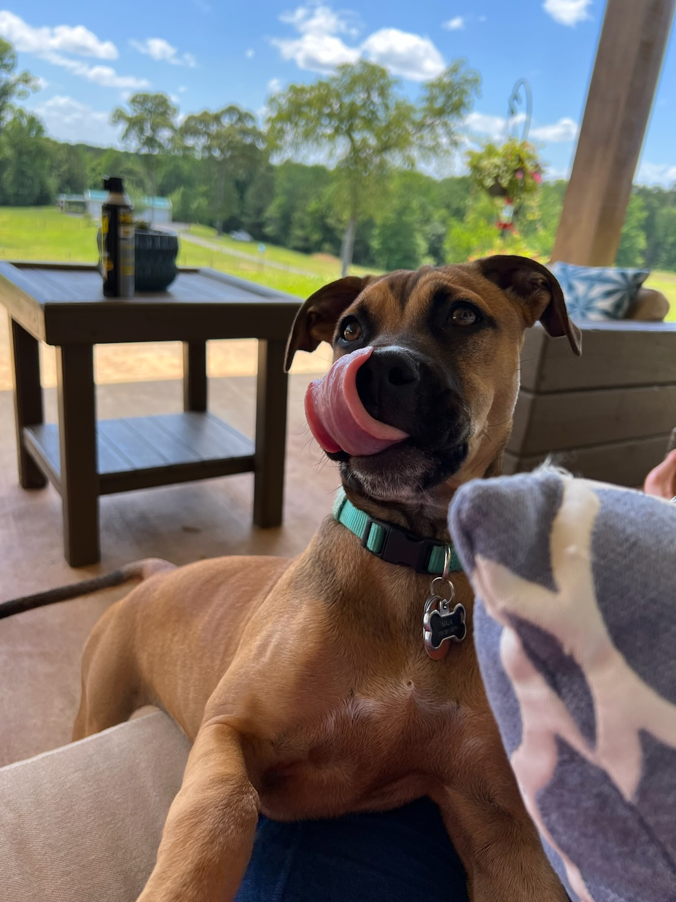

More specifically, I'm a senior computer science major with a concentration in cyber security. While the intention of this website is to showcase my technical skills, there is more to me than just my ability to program. Have a look around and see for yourself ☺
I've lived in West Monroe, LA my whole life. My passion
for computer science started early in high school when I attended a college major fair
at the University of Louisiana at Monroe (ULM). The fair included a booth for computer
science, and after getting a rundown of the vast field of computer science, I was intrigued.
By 11th grade I started taking computer science courses at school, and I eventually went on
to major in the field - and have loved it ever since.
So why do I love working in the field of computer science?
It's simple: I love solving problems.
In the last five years I've worked in computer science and have learned that solving problems with technology
enables solutions not otherwise attainable by other means. The complexity and flexibility of computer systems allows us
to achieve goals that many who came before us thought were impossible. Who wouldn't be excited about that?
In addition to my love of technology, I have other personal hobbies including reading (the current book I'm reading can be seen below), playing video games (a nerd at heart), and getting out in nature and exploring what the world has to offer. I'm never afraid to try something new. Never know until you try. I also love taking care of my dog Nala (also seen below).
My graduation date is May 2023. I'm in the process of searching for a job, and when I do get a job, I look forward to expanding my knowledge in a challenging, dynamic work environment and bringing my problem solving, leadership and technology skills to help enable any company’s goals.
Copyright © 2022 Joshua Bailey. All rights reserved.
{kind=link}